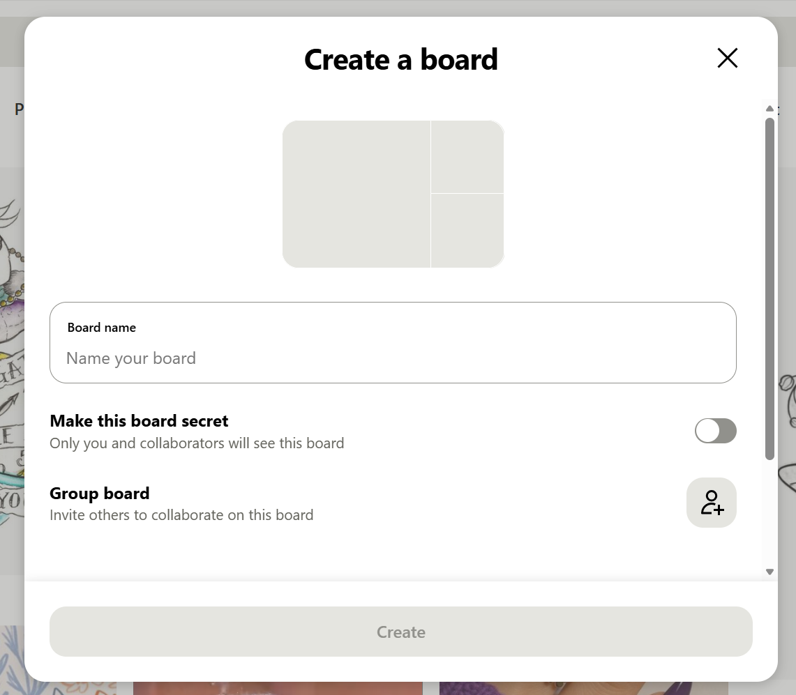
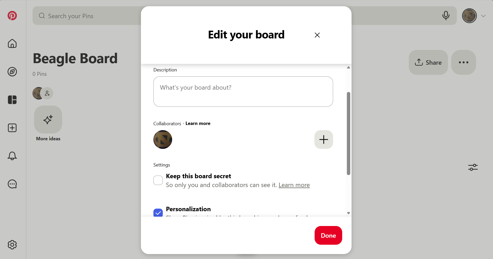
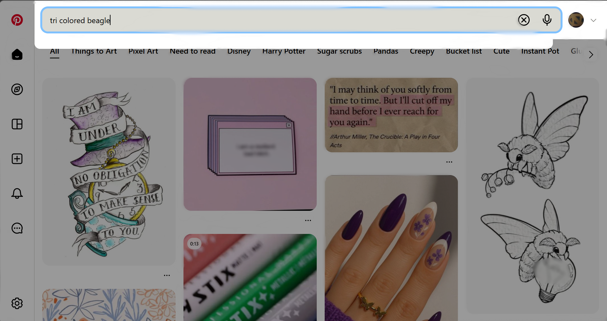
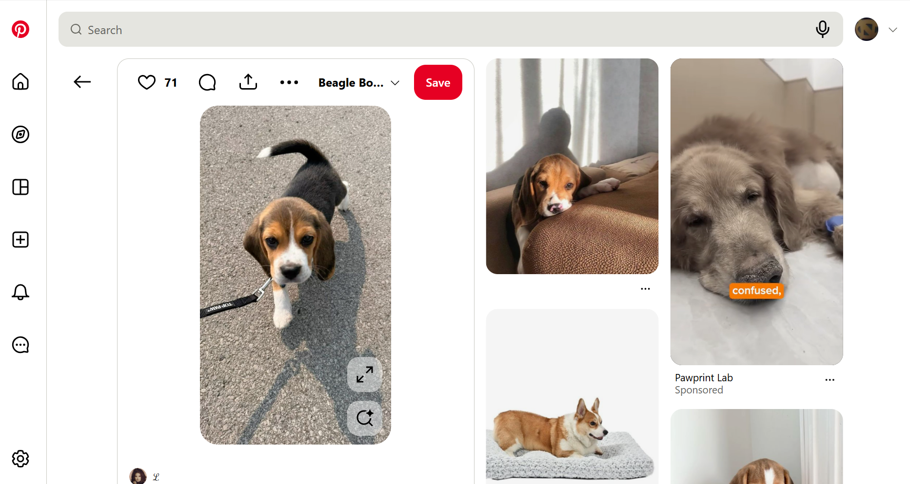
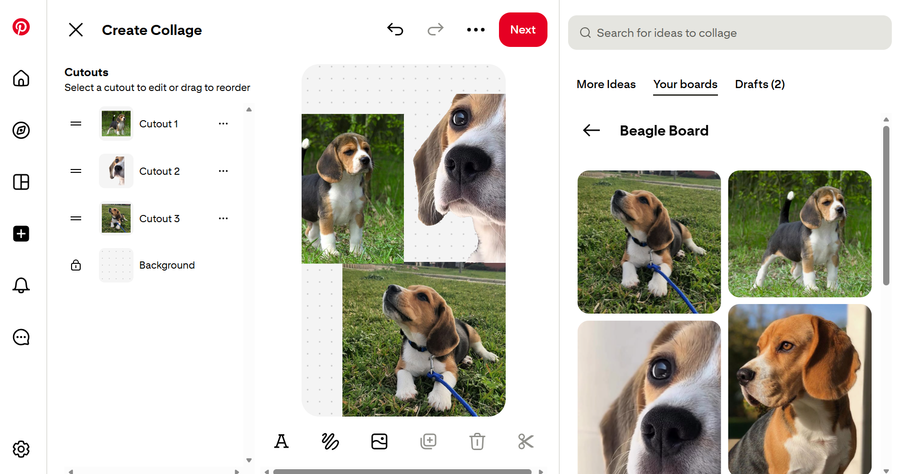

Pinterest Usability Test
Here, you can see the results of a usability test conducted on Pinterest. Tasks were developed by the group and verified before testing. The usability test was conducted by giving the tasks to a participant and evaluating their time, accuracy, and emotions while completing the task. Afterward, they completed the SUS test (see at bottom of page).
Tasks
1. Create a public Pinterest board called "Beagle Board"

Completion Time: 00:22 secs
User quickly found the create option on the left sidebar. Once they selected the "Create" option, they saw the "Create a Board" option listed, as seen in the image. User filled out necessary fields and created the board. User was satisfied and noted the task was easy.
2. Change the privacy settings of the Beagle Board to be a private board.

Completion Time: 00:10 secs
After creating a board, the user was already on the board page. They noticed the additional options in the top left and selected it. There was an option within that to edit which is what the user chose. This displayed what is shown in the image to the left. The user did not notice the secret board option at first, but noticed it quickly and made the edit. The user noted that the task was easy.
3. Search for beagle pictures on Pinterest and save some to the Beagle Pinterest Board.



Completion Time: 01:50 min
User quickly located the search bar at the top of the page. They noticed that the search bar within the board was for their pins only. They navigated back to the home page and used that search bar, shown in the top image, to successfully find pictures of beagles. When it came to saving the pictures, the user had more trouble. User found love and unlove after clicking multiple options. Once the user located the save button, shown in the middle image, they were unable to specify which board to save the pin to. The user saved pins to their profile and then navigated to their profile where they had to edit each pin to change its location. The user then discovered the More Ideas page, shown in the bottom image, for the specific board and found it easier to add pins from there. The user noted that they were frustrated and annoyed.
4. Search for a beagle board and follow that board.


Completion Time: 00:45 secs
User quickly relocated the search bar and executed the search for beagles. They were initially confused because only individual pictures were popping up. They managed to find the filter on the top left and chose to filter only for boards, shown in the top image. User then selected a board. They chose the ... menu and found the option to follow the board from there, shown in the bottom image. User had no real comments on this task. There was a slight note of confusion with searching before they found the filter option.
5. Create a collage using pictures from the Beagle board.

Completion Time: 04:00 min
User noted some nervousness at the thought of completing this task. The user quickly found the create option again and the collage option within. The user noted a lot of confusion and nervousness once within the collage creation, shown in the image to the left. The user found the option to use pictures from the beagle board on the right and began putting pictures in. The user also wanted to use pictures from the board they followed and noted they were unable to find it. The collage builder automatically did a cutout for one of the images which shocked the user. Once the user discovered this option, they had a lot of fun with the cutouts and expressed happiness. The user also found the option to draw on the collage and drew a beagle. The user then saved the collage. The user noted many emotions throughout the task starting with nervousness and confusion and ending with happiness and shock.
SUS Test
This form is prefilled with the results from the usability test detailed on this website.
Enter a number 1 to 5 where 1 indicates "Strongly Disagree" and 5 indicates "Strongly Agree".